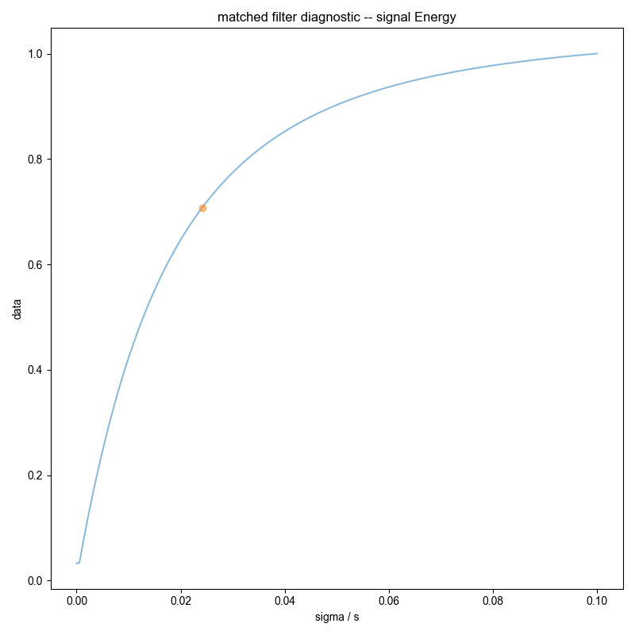
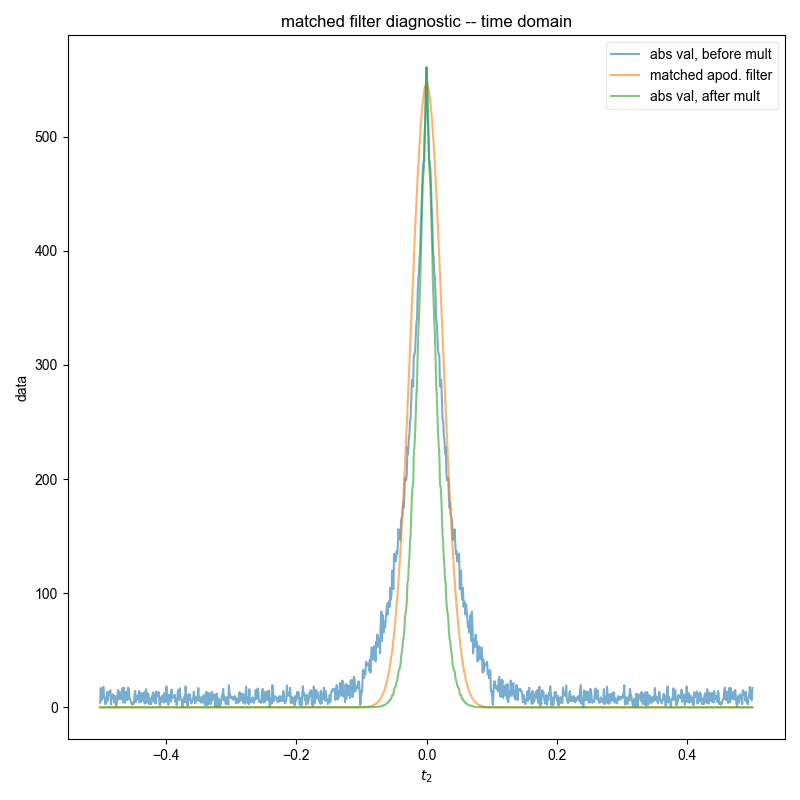
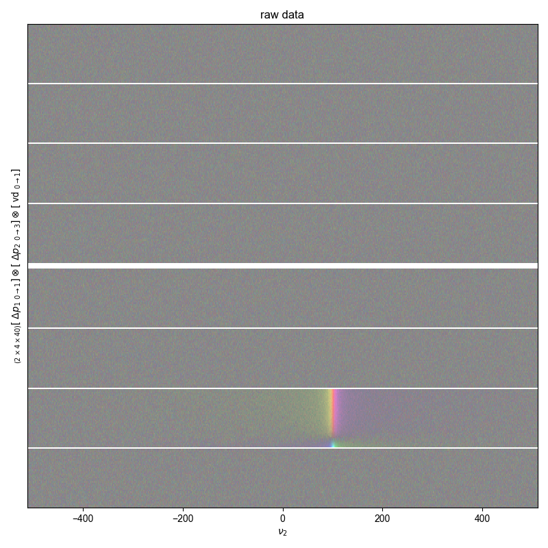

Note
Go to the end to download the full example code
Check Integration¶
Makes sure that automatically chosen integral bounds perform similar to or better than what you would choose by hand.


- 
- 
- 

---------- logging output to /home/jmfranck/pyspecdata.0.log ----------
/home/jmfranck/git_repos/pyspecdata/pyspecdata/core.py:1342: UserWarning: marker is redundantly defined by the 'marker' keyword argument and the fmt string "." (-> marker='.'). The keyword argument will take precedence.
return ax.errorbar(*tebargs[:-1], **tebkwargs)
/home/jmfranck/git_repos/pyspecdata/pyspecdata/core.py:1568: UserWarning: marker is redundantly defined by the 'marker' keyword argument and the fmt string "o" (-> marker='o'). The keyword argument will take precedence.
retval = myplotfunc(*plotargs, **kwargs)
/home/jmfranck/git_repos/pyspecdata/pyspecdata/figlist.py:735: UserWarning: This figure includes Axes that are not compatible with tight_layout, so results might be incorrect.
plt.gcf().tight_layout()
from pylab import *
from pyspecdata import *
from pyspecProcScripts import integrate_limits, integral_w_errors
from numpy.random import seed
rcParams["image.aspect"] = "auto" # needed for sphinx gallery
# sphinx_gallery_thumbnail_number = 2
seed(
2021
) # so the same random result is generated every time -- 2021 is meaningless
init_logging(level="debug")
fl = figlist_var()
t2 = nddata(r_[0:1:1024j], "t2")
vd = nddata(r_[0:1:40j], "vd")
ph1 = nddata(r_[0, 2] / 4.0, "ph1")
ph2 = nddata(r_[0:4] / 4.0, "ph2")
signal_pathway = {"ph1": 0, "ph2": 1}
excluded_pathways = [(0, 0), (0, 3)]
manual_slice = (60, 140) # manually chosen integration bounds
# this generates fake data w/ a T₂ of 0.2s
# amplitude of 21, just to pick a random amplitude
# offset of 300 Hz, FWHM 10 Hz
data = (
21 * (1 - 2 * exp(-vd / 0.2)) * exp(+1j * 2 * pi * 100 * t2 - t2 * 10 * pi)
)
data *= exp(signal_pathway["ph1"] * 1j * 2 * pi * ph1)
data *= exp(signal_pathway["ph2"] * 1j * 2 * pi * ph2)
data["t2":0] *= 0.5
fake_data_noise_std = 2.0
data.add_noise(fake_data_noise_std)
data.reorder(["ph1", "ph2", "vd"])
# at this point, the fake data has been generated
data.ft(["ph1", "ph2"])
fl.next("what does a usual error bar look like?")
just_noise = nddata(r_[0:1:50j], "t")
just_noise.data *= 0
just_noise.add_noise(fake_data_noise_std)
just_noise.set_error(fake_data_noise_std)
fl.plot(just_noise, ".", capsize=6)
# {{{ usually, we don't use a unitary FT -- this makes it unitary
data /= 0.5 * 0.25 # the dt in the integral for both dims
data /= sqrt(ndshape(data)["ph1"] * ndshape(data)["ph2"]) # normalization
# }}}
data.ft("t2", shift=True)
dt = data.get_ft_prop("t2", "dt")
# {{{ vector-normalize the FT
data /= sqrt(ndshape(data)["t2"]) * dt
# }}}
# {{{ First, run the code that automatically chooses integration bounds
# and also assigns error
fl.next("compare manual vs. automatic", legend=True)
error_pathway = (
set(
(
(j, k)
for j in range(ndshape(data)["ph1"])
for k in range(ndshape(data)["ph2"])
)
)
- set(excluded_pathways)
- set([(signal_pathway["ph1"], signal_pathway["ph2"])])
)
error_pathway = [{"ph1": j, "ph2": k} for j, k in error_pathway]
s_int, returned_frq_slice = integral_w_errors(
data, signal_pathway, error_pathway, fl=fl, return_frq_slice=True
)
fl.plot(s_int, ".", label="fully auto: real", capsize=6)
fl.plot(s_int.imag, ".", label="fully auto: imaginary", capsize=6)
# }}}
logger.debug(
strm("check the std after FT", std(data["ph1", 0]["ph2", 0].data.real))
)
# the sqrt on the next line accounts for the var(real)+var(imag)
fl.next("raw data")
fl.image(data, alpha=0.5)
fl.next("real part of raw data")
fl.image(data.real, alpha=0.5)
fl.next("compare manual vs. automatic")
# run a controlled comparison between manually chosen integration bounds and
# compare against automatically generated
# as noted in issue #44 , manually chosen bounds underperform
for bounds, thislabel in [
(
manual_slice,
"manual bounds",
), # leave this as a loop so user can experiment with different bounds
(
tuple(returned_frq_slice),
"auto bounds",
), # leave this as a loop so user can experiment with different bounds
]:
manual_bounds = data["ph1", 0]["ph2", 1]["t2":bounds]
assert manual_bounds.get_ft_prop("t2")
std_from_00 = (
data["ph1", 0]["ph2", 0]["t2":bounds]
.C.run(lambda x: abs(x) ** 2 / 2)
.mean_all_but(["t2", "vd"])
.mean("t2")
.run(sqrt)
)
logger.debug(
strm(
"here is the std calculated from an off pathway",
std_from_00,
"does it match",
fake_data_noise_std,
"?",
)
)
N = ndshape(manual_bounds)["t2"]
df = manual_bounds.get_ft_prop("t2", "df")
logger.debug(
strm(ndshape(manual_bounds), "df is", df, "N is", N, "N*df is", N * df)
)
manual_bounds.integrate("t2")
# N terms that have variance given by fake_data_noise_std**2 each multiplied by df
# the 2 has to do w/ real/imag/abs -- see check_integration_error
propagated_variance = N * df**2 * fake_data_noise_std**2
propagated_variance_from_inactive = N * df**2 * std_from_00**2
logger.debug(
strm(
"manually calculated integral error is", sqrt(propagated_variance)
)
)
manual_bounds.set_error(sqrt(propagated_variance))
fl.plot(
manual_bounds,
".",
capsize=6,
label="%s (programmed σ)\n$%4g\\rightarrow%4g$"
% ((thislabel,) + bounds),
alpha=0.5,
)
manual_bounds.set_error(sqrt(propagated_variance_from_inactive.data))
fl.plot(
manual_bounds,
".",
capsize=6,
label="%s (inactive CT σ)\n$%4g\\rightarrow%4g$"
% ((thislabel,) + bounds),
alpha=0.5,
)
fl.show()
Total running time of the script: (0 minutes 2.582 seconds)